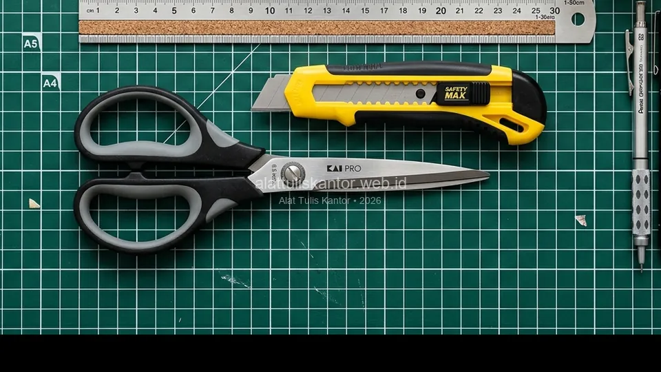

Gunting dan cutter adalah alat potong yang hampir selalu ada di setiap meja kerja kantor, namun sering kali dianggap remeh dari sisi aspek keamanan kerja. Padahal, pemilihan gunting dan cutter yang tidak ergonomis atau berkualitas rendah dapat meningkatkan risiko cedera tangan, mulai dari lecet ringan hingga luka sayat yang cukup serius, terutama jika digunakan secara intensif untuk memotong dokumen tebal atau kemasan barang setiap hari.
Artikel ini membahas kriteria memilih gunting dan cutter kantor yang ergonomis dan aman, sebagai bagian dari paket ATK kantor terpadu yang memperhatikan aspek keselamatan kerja karyawan. ATK Prima Distribusi menyediakan alat potong kantor berkualitas dengan standar keamanan yang baik. Konsultasi kebutuhan pengadaan dapat dilakukan via WhatsApp di 0889-8964-3555.
Fakta K3 Perkantoran: Lebih dari 35% insiden cedera ringan di lingkungan administrasi perkantoran dan logistik disebabkan oleh penggunaan cutter tumpul tanpa kunci pengaman atau gunting berpegangan keras yang licin saat digenggam.
Ringkasan Memilih Gunting dan Cutter Kantor yang Ergonomis
Gunting dan cutter kantor yang ergonomis dan aman sebaiknya memiliki:
- Pegangan (handle) anti-slip: Lapisan karet berkontur empuk yang nyaman digenggam dalam waktu lama tanpa menimbulkan kapalan atau lecet.
- Mekanisme pengunci (safety lock): Mencegah mata pisau cutter keluar secara tidak sengaja saat disimpan di laci meja bersama alat tulis lainnya.
- Bobot yang seimbang: Distribusi berat proporsional agar tidak membebani pergelangan tangan pada gerakan memotong berulang.
- Sudut bilah presisi: Bilah gunting stainless steel tajam yang memotong rapi tanpa membutuhkan tekanan fisik berlebihan.
Mengapa Aspek Ergonomis Penting untuk Alat Potong Kantor
Penggunaan gunting atau cutter dengan desain yang tidak ergonomis dalam jangka panjang dapat menyebabkan kelelahan otot tangan, bahkan berkontribusi pada kondisi seperti repetitive strain injury (RSI) pada karyawan yang secara rutin menggunakan alat potong sebagai bagian dari pekerjaan mereka, misalnya di bagian administrasi yang sering memotong dokumen arsip atau bagian gudang yang membuka kemasan barang setiap hari sesuai SOP operasional kantor.
Desain ergonomis mendistribusikan tekanan mekanis secara merata ke seluruh telapak tangan, mencegah titik tumpu tekanan berlebih pada saraf jari dan sendi ibu jari yang rentan mengalami peradangan.
Kriteria Gunting Kantor yang Ergonomis dan Aman
1. Pegangan dengan Lapisan Anti-Slip
Pegangan gunting yang dilapisi karet lembut (soft touch grip) memberikan cengkeraman lebih mantap dan mengurangi risiko tergelincir saat tangan berkeringat, sekaligus meredam tekanan pada telapak tangan saat memotong tumpukan berkas tebal.
2. Desain Bilah yang Presisi
Bilah gunting berkualitas baik dirancang dengan sudut potong presisi berbahan high-carbon stainless steel sehingga tidak memerlukan tenaga berlebih untuk memotong kertas atau bahan lain, mengurangi kelelahan otot tangan pada penggunaan intensif sepanjang hari kerja.
3. Ukuran yang Sesuai dengan Genggaman Pengguna
Gunting dengan ukuran yang terlalu besar atau kecil untuk genggaman pengguna dapat menyebabkan posisi tangan yang tidak alami saat digunakan, sehingga penting menyediakan variasi ukuran gunting (misalnya ukuran 6 inci untuk presisi dan 8 inci untuk pemotongan lembaran besar) di kantor guna mengakomodasi kebutuhan spesifik karyawan.

Kriteria Cutter Kantor yang Ergonomis dan Aman
1. Mekanisme Safety Lock yang Andal
Cutter dengan mekanisme pengunci otomatis (auto-lock atau screw-lock) mencegah mata pisau bergeser atau keluar secara tidak sengaja saat cutter tersimpan di laci bersama alat tulis lain, mengurangi risiko insiden tertusuk atau tergores mata pisau.
2. Mata Pisau yang Mudah Diganti
Pilih cutter dengan mekanisme penggantian mata pisau yang mudah dan aman. Mata pisau yang sudah tumpul namun tetap dipaksakan digunakan justru jauh lebih berbahaya karena membutuhkan tekanan berlebih yang meningkatkan risiko cutter selip dan melukai pengguna.
3. Badan Cutter yang Kokoh dan Bertekstur
Badan cutter (bodi) sebaiknya terbuat dari rangka logam berlapis elastomer bertekstur, agar tetap kokoh dan stabil digenggam saat memotong material keras seperti kardus tebal, plastik strapping band, atau map plastik tanpa melengkung.
Tabel Perbandingan: Alat Potong Standar vs Ergonomis-Aman
| Parameter Evaluasi | Gunting/Cutter Standar Murah | Gunting/Cutter Ergonomis & Aman |
|---|---|---|
| Material Pegangan | Plastik keras kaku tanpa bantalan | Karet elastomer berkontur anti-slip |
| Mekanisme Keamanan | Tanpa safety lock, mudah geser | Auto-lock / screw-lock presisi |
| Risiko Kelelahan Tangan | Tinggi, memicu kapalan & RSI | Sangat rendah, potongan ringan |
| Daya Tahan Ketajaman | Cepat tumpul dan mudah berkarat | Stainless steel anti-karat tahan lama |
| Estimasi Harga Satuan | Rp5.000 – Rp15.000 | Rp15.000 – Rp35.000 (Investasi Awet) |
Tips Penggunaan dan Penyimpanan Alat Potong yang Aman
- Selalu kunci mata pisau: Pastikan mata pisau cutter ditarik masuk sepenuhnya ke dalam bodi dan terkunci sebelum diletakkan di meja atau disimpan di laci.
- Sediakan wadah penyimpanan terpisah: Simpan gunting dan cutter pada desk organizer atau laci khusus, terpisah dari pulpen dan sticky notes agar tidak tersenggol saat mengambil alat tulis tanpa melihat langsung.
- Ganti mata pisau sebelum tumpul: Patahkan segmen mata pisau yang aus menggunakan alat pematah bawaan cutter, atau ganti mata pisau baru secara berkala.
- Berikan pengarahan K3: Edukasikan tata cara pemotongan yang benar (menjauh dari arah tubuh) kepada seluruh staf baru saat proses orientasi.
- Sediakan kotak P3K siap pakai: Tempatkan kotak P3K mini di dekat area administrasi dan meja logistik sebagai pertolongan pertama jika terjadi insiden kecil.
Memilih Alat Potong Sesuai Kebutuhan Divisi
Kebutuhan alat potong sangat bervariasi tergantung fungsi kerja divisi:
- Divisi Administrasi & Keuangan: Membutuhkan gunting kertas ukuran 7-8 inci dengan ujung tumpul (blunt tip) dan cutter kecil 9mm untuk membuka amplop surat dan merapikan dokumen arsip pada paket administrasi keuangan.
- Divisi Logistik, Gudang & Pengiriman: Memerlukan heavy-duty cutter 18mm atau 25mm dengan bodi die-cast zinc dan wheel-lock kokoh yang tersedia pada paket logistik dan packing untuk memotong kardus tebal dan lakban packing.
- Divisi Desain & Kreatif: Membutuhkan precision art knife (pen cutter) dan gunting titanium anti-lengket untuk memotong kertas stiker atau foam board dengan detail tinggi.
Studi Kasus: Pengurangan Insiden Cedera Ringan di PT Logistik Sentosa Prima
PT Logistik Sentosa Prima sebelumnya mencatat rata-rata 4-6 insiden luka sayat ringan per bulan pada staf gudang dan administrasi akibat penggunaan cutter murah tanpa mekanisme pengunci yang memadai, di mana cutter sering disimpan dalam keadaan mata pisau sedikit terbuka di saku rompi kerja.
Setelah beralih ke paket ATK kantor berstandar K3 yang dilengkapi cutter auto-lock bodi anti-slip dan gunting ergonomis dari distributor resmi, serta menerapkan SOP penyimpanan aman, perusahaan berhasil menurunkan angka insiden luka sayat hingga lebih dari 80 persen dalam 6 bulan pertama.
Hasil Implementasi K3: Penurunan angka cedera kerja berdampak langsung pada zero downtime operasional dan peningkatan kenyamanan kerja seluruh karyawan.
Melengkapi Paket ATK dengan Perlengkapan Keselamatan Pendukung
Selain memilih gunting dan cutter yang ergonomis, pertimbangkan untuk melengkapi area kerja dengan perlengkapan keselamatan pendukung seperti sarung tangan tipis anti-sayat (cut-resistant gloves level 3) untuk staf yang secara rutin menangani pembongkaran paket kemasan besar.
Sediakan juga wadah pembuangan khusus (blade disposal box) untuk menampung patahan mata pisau cutter bekas, agar limbah tajam tidak tercampur dengan tempat sampah kertas umum yang berisiko melukai petugas kebersihan kantor.
Menyusun Program Pelatihan Singkat Penggunaan Alat Potong
Perusahaan sebaiknya menyelenggarakan sesi briefing singkat 10-15 menit mengenai cara memegang, memotong, dan menyimpan gunting maupun cutter dengan benar, terutama saat program onboarding karyawan baru.
Selain meminimalkan risiko kecelakaan, pelatihan singkat ini membantu memperpanjang usia pakai alat potong, mencegah kerusakan bilah akibat dipakai memotong material yang melebihi kapasitas desain alat.
Evaluasi Berkala Kondisi Alat Potong di Seluruh Area Kerja
Tim General Affair disarankan melakukan audit visual berkala setiap 3 bulan untuk memeriksa apakah mekanisme pengunci cutter masih mencengkeram kuat atau pegangan gunting mengalami keretakan. Alat yang telah aus atau rusak harus segera ditarik dan diganti baru melalui alokasi anggaran ATK kantor yang terencana.
Cara Memesan Paket ATK Kantor dengan Alat Potong Ergonomis
Untuk melihat koleksi lengkap gunting presisi, safety cutter, dan perlengkapan meja kerja lainnya, kunjungi katalog produk perekat dan pemotong ATK kami. Anda juga dapat memilih paket lengkap yang sudah disesuaikan dengan kebutuhan divisi melalui menu semua paket ATK kantor.
Pelajari pula legalitas badan usaha dan komitmen mutu kami di halaman Tentang Kami sebelum mengajukan penawaran pengadaan korporasi.
Pertanyaan yang Sering Diajukan (FAQ)
Kesimpulan
Memilih gunting dan cutter kantor yang ergonomis dan aman bukan sekadar soal kenyamanan fisik, melainkan bagian penting dari aspek keselamatan kerja (K3) yang wajib diperhatikan dalam penyusunan paket ATK kantor. Dengan pegangan anti-slip, mekanisme pengunci yang andal, dan pemilihan alat sesuai peruntukan divisi, perusahaan dapat melindungi keselamatan karyawan sekaligus meningkatkan efisiensi operasional secara berkelanjutan.